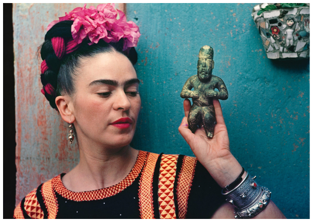

Five reasons why Frida Kahlo is an icon of feminism
An artist who fought for women's rights during her whole life. Kahlo does not hide her convictions, she rejects oppression even if it means shocking society. She will never comply with her oppressors and will keep provoking in order to obtain the respect she craves so much.
Frida Kahlo incarnate feminism and liberty
She publicly asserts her bisexuality as something she is proud of. She likes sleeping with men and women and she does not hide from it. The fact that her husband, Diego Rivera regularly cheats on her, entices her to do the same. This eventually led the couple to have an open marriage which was very rare at the time. Frida Kahlo also slept with her husband's sexual partners such as the American actress Paulette Goddard. Diego was not jealous of the women Frida Kalho slept with but he was extremely jealous of men she dated such as Leon Trotsky.
She did not care about beauty standards
Frida Kahlo did not restrict herself to normes, she liked to express her “feminine beauty” out of beauty standards. For example, she liked to show her masculine side so she stopped plucking her eyebrow, her mustache and her armpits. It is also said that she voluntarily enlarged her eyebrows with a black pencil. Kahlo affirms and creates her own style through clothing. At the time women were supposed to wear tight dresses but Kahlo used to wear long skirts and large t-shirts with a lot of colored patterns. She also tied rubans into her hair and had many accessories that made her fashion sense worldwide famous. Even though Kahlo was against beauty standards, she was considered as one of the most beautiful women of her time.

Defying gender stereotypes
Women did not have a lot of rights in the 1900s. At the time men were qualified as dominant sex and women were supposed to stay home and be housewives. Kahlo went to school which was extremely rare for women at the time.
Isabel Alcantara, writes in her book about Frida Kahlo
“There were only five girls for three hundred boys in this school and Mathilde (Frida’s Mother) could not stand the fact that her daughter was one of them”
Unlike the other girls, Frida was often dressed in men's clothes as we can see on family pictures. Not only did she wear men’s clothes but she also defied them in many tequila drinking contests. She kept drinking all along her life even though her doctor advised her not to because of her fragile health.
Intimates relationships with women depicted in her paintings
During the 19th century women did not speak about their sexual experience. Nevertheless, Frida Kalho openly spoke about miscarriage, her periods, her operations, breastfeeding, infertility and sexual organs. Her paintings might seem unsettling at first look but they perfectly depict the reality of being a woman in the 1900s. Frida Kahlo represents herself in a surrealist way which impresses the famous painters at the time, especially the dadas such as André Breton. Her paintings are directly inspired from her life. Kahlo tries to be the most representative in order to effectuate a transfer towards the spectators so they can dissect their fears, passions and sufferings which they hide deep inside.
She was a political activist
Even though she was born in Mexico, a land of catholic roots, Kahlo is a proud atheist and communist. Even if she suffers from many health issues, Frida Kahlo was a very active member of the communist party. She thought that communism was the most human political regime. Kahlo was also very patriotic. She even changed her birthdate which was originally 1907 in order to coincide with the date of the Mexican revolution of 1910. The political convictions of Kahlo were massively inspired by the marxist ideology.
“I am convinced that this revolution will change the world in a freeclass society and will liberate the oppressed”
She also had a romance with Léon Trotsky, a marxist revolutionary exiled to Mexico. He lived with Kahlo and Rivera for two years at La Casa Azul.
The Book “Kahlo” edited by Taschen & the DVD ‘Chez Frida Kahlo’ edited by Beaux Arts Magazine
More Paintings from Frida Kahlo
The Broken Column (Frida KAHLO, 1944)
Henry Ford Hospital or HFH (Frida KAHLO, 1932)